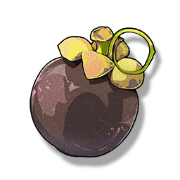

Mangosteen
Missions

One of the tokens given by Jinhsi
Similar to the old Tacetite grenade weapon model, but it is indeed a common fruit.
After investigation, it is confirmed to be a kind of imported fruit. The climate of Jinzhou, a remote place, is not conducive to the growth of this fruit, it needs to be imported by water from the "eastern" Port Gunchao.